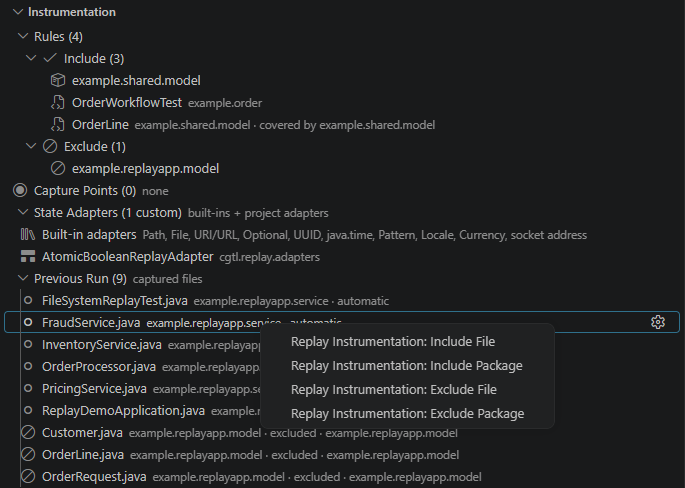

INSTRUMENT
Record what matters.
Choose the packages and files to include, remove noisy areas, add capture points, and extend state recording with adapters before the run begins.

Stop rerunning the same failure just to ask a different question. Record the Java execution once, then move through what happened, inspect historical state, follow call flow, and see filesystem changes afterward.
The demo is the product. Step through recorded execution, inspect state at the selected moment, and correlate what the program did with filesystem activity.

Interactive walkthrough now; replace demos/replay/hero-replay.gif whenever your hero recording is ready.
Choose the packages and files to include, remove noisy areas, add capture points, and extend state recording with adapters before the run begins.

Instead of guessing the right breakpoint and reproducing the failure, move backward and forward through the execution you already captured.

Select a recorded event and inspect the variables that existed there. Change the selected event and the historical state follows it.

See files being created, modified, moved, and deleted alongside the execution timeline, so side effects do not disappear when the process exits.

Show the complete workflow once: configure the capture, run the application, open the replay, and investigate what happened.
A live debugger makes you predict where to stop and often rerun when you guessed wrong. Replay preserves the execution first, so the next question does not require another reproduction.
Step backward and forward through recorded execution and jump directly to meaningful events instead of reproducing the run.
Inspect captured variables and values at the selected point in execution, with search for quickly finding the state that matters.
Follow execution across methods and inspect the recorded call stack to understand how the program arrived at a result.
Lambda bodies participate in execution tracking so replay does not silently jump over important functional-style code.
Watch a scoped filesystem root and inspect file transitions alongside program execution—useful when the output isn't only in memory.
Teach Replay how to capture application-specific types. Unsupported values can generate an adapter template directly from the workflow.
Control where detailed state is captured so recording can focus on the execution regions that matter to the investigation.
Package the replay runtime and sources so applications can execute locally, remotely, or in containers and be inspected afterward in VS Code.
Search recorded execution and source activity to get from a large run to the relevant code and events quickly.
The replay workflow separates capturing the behavior from analyzing it.
Configure the application sources and the execution you want Replay to observe.
Run the test or application normally—inside VS Code, from a script, remotely, or in a container.
Open the captured replay artifact in the Replay Viewer with its matching application sources.
Move through execution, inspect state, trace calls, search events, and examine filesystem transitions.
State belongs to a moment in execution. Selecting an event lets you inspect the values captured for that point instead of trying to reconstruct them from logs.
For applications that read, create, modify, or remove files, Replay can track a configured root so those transitions can be correlated with execution.
The application does not have to launch from the extension. Replay can support external launch scripts and containerized or remote execution, then bring the resulting capture back into the viewer.
The documentation will cover local execution, external launch scripts, container workflows, source packaging, instrumentation, and replay analysis.